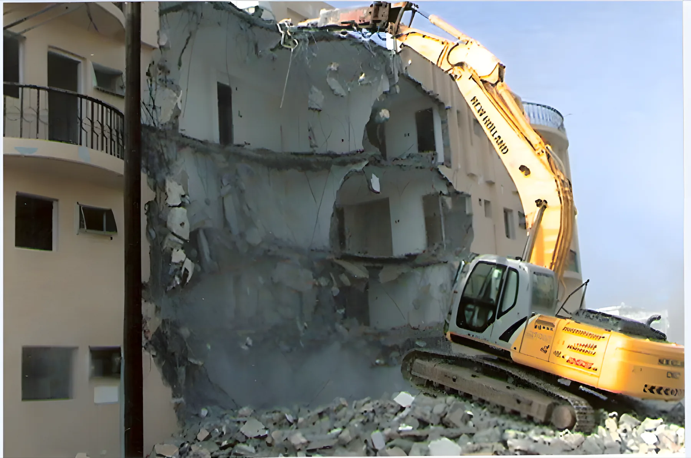

Services
Six core activities, all earthworks. The same company, the same fleet and the same site teams on every one of them.

Mass excavation
Bulk earthmoving has long been one of our core activities. We dig out the ground for basements, foundations, plant areas and trenches, take the spoil away, and backfill when the structure is in.
- Excavation, disposal & backfilling
- Mass excavation in rock
- Trench excavation, as on the sea water intake and outfall job
- Our own excavators, rock breakers and operators

Mountain & hill cutting
Oman builds on rock and hillside. We cut the high ground down, fill the low ground, and leave a platform ready for the next contractor. On the Jifnain enabling works it was mountain cutting and filling from start to finish.
- Mountain cutting and filling works
- Enabling works ahead of construction
- Rock breaking, loading and disposal

Access roads & graded roads
A site is only as good as the road into it. We build access roads and graded roads: set out by survey, graded to level and rolled.
- Access roads to new sites
- Graded roads
- Grading and compaction

Site & plot preparation
Before anything is built, the plot has to be cleared, levelled and brought to the right formation. That is the work in the Salalah photo: rock broken out and the area levelled for the building.
- Site clearing
- Levelling areas
- Excavation for buildings
Road resheeting
Unpaved roads wear down under heavy traffic. Resheeting puts a fresh layer of material on the road, graded and compacted, so it carries traffic again.
- Road resheeting
- Grading and compaction

Demolition works
We take buildings down by machine, load out the rubble and leave the plot clear for what comes next.
- Demolishing works
- Rubble loading and disposal
- Site cleared afterwards
Safety & quality
Health, Safety & Environment
Our safety and environmental programme covers every section and area of our operations. It is built on prevention: reducing and eliminating anything that could, or does, result in loss.
Our goal is HSE performance that holds up when it is measured by our clients, our industry peers and the government regulators.
Quality
Our directors and management are committed to running every part of the business to the standard that gives our clients the highest possible quality of service, with a management style that keeps quality in the culture of the whole company.
Call the office
+968 2439 1512Phone
Fax
+968 2439 1519
Post
P.O. Box 817, P.C. 112
Muscat, Sultanate of Oman
For a quote, email us the site location, the scope of work and any drawings or photos you have.